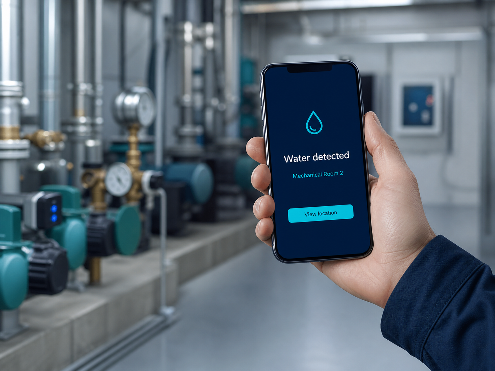
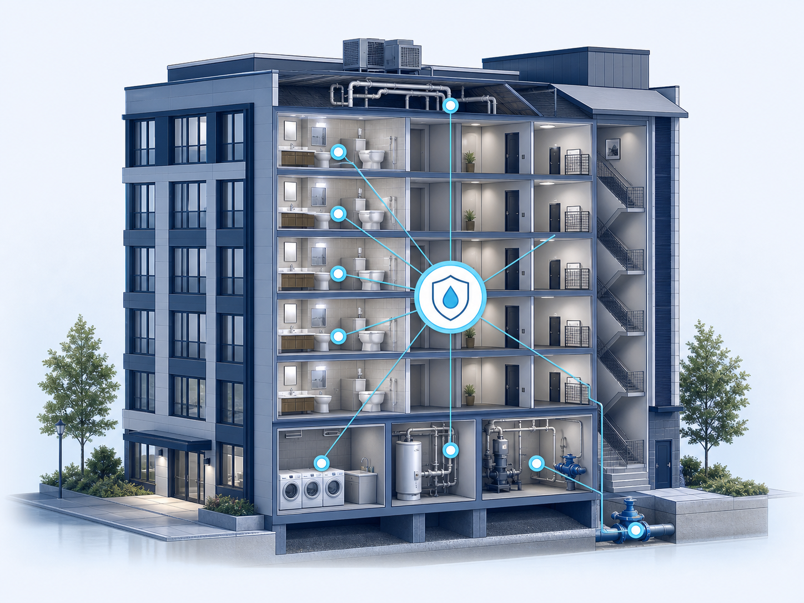
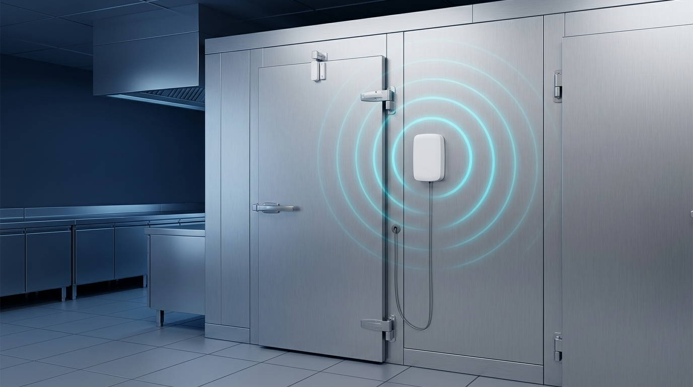

Detect
Sensors monitor mechanical rooms, sump and condensate pans, walk-in coolers, and optional water flow around the clock.
Long-range wireless monitoring for multifamily properties, independent hotels, and commercial buildings nationwide, covering mechanical rooms, sump and condensate pans, HVAC runtime, and walk-in coolers & freezers.
Commercial-grade wireless monitoring · No building Wi-Fi or PMS required Custom Sensor Placement Plan, clear Alert Response Plan for your team, and ongoing device-health oversight.
NestShield combines property-level sensor planning with continuous automated monitoring, clear escalation procedures, and event records across water, mechanical, and refrigeration risk points.

A useful alert tells your team what happened, where it happened, and what to do next, without false-alarm fatigue. NestShield builds the Alert Response Plan around your property and your on-call staff.
National property and hospitality loss data shows why monitoring mechanical rooms, water lines, and walk-in refrigeration catches costly failures before they escalate.
Water damage accounts for 70.2% of multifamily property insurance claims, with reported commercial water claim averages of $11,098 to $15,000+ across industry studies.
Indoor humidity above 60% drives condensation and moisture damage, while clogged condensate pans and failing sump or lift pumps trigger repeat weekend callbacks.
A single overnight compressor failure or propped walk-in door can cost hotel kitchens and foodservice operators $20,000-$40,000 in spoiled inventory and lost revenue.
Point sensors catch drips on the floor, while optional continuous-flow monitoring flags continuous or abnormal water use (such as running toilets) before a surprise utility bill arrives.
Sources: Multifamily Dive (multifamily property claims), Perceptive Things (commercial water-claim averages), U.S. EPA (Moisture Control Guidance), and Professional Insurance Group (food-spoilage benchmarks). National industry benchmarks; not NestShield performance guarantees.
Two focused monitoring programs under one point of contact and no building Wi-Fi or PMS tie-in required. Licensed trade partners handle any electrical panel or inline plumbing work.
Targeted long-range wireless protection for mechanical rooms, water-heater closets, risers, and high-consequence spaces, catching leaks, overflows, and equipment issues early.
Fast, non-invasive monitoring for hotel breakfast kitchens, restaurants, and foodservice walk-ins with no electrical or plumbing cuts required.
Targeted add-ons that can be scoped alongside your mechanical-room or walk-in walkthrough when your property has a specific operational need.
Ready to test a focused 30-day pilot? Book a Walkthrough
Every building is different. NestShield starts with a site walkthrough and Sensor Placement Plan, then designs monitoring around the mechanical rooms, water lines, and walk-ins that create the biggest surprises.


Sump pits, HVAC condensate pans, water heaters, and pump feeds are where repeat weekend callbacks start. A long-range wireless network, with coverage verified during the site walkthrough, monitors mechanical rooms without touching building Wi-Fi.
Stainless-steel walk-in walls block ordinary wireless sensors. We mount the transmitter outside the box, route a thin temperature probe through the gasket or port, and program 15-30 minute defrost delays designed to filter routine defrost cycles and reduce nuisance alerts.

A long-range wireless network is designed to reach from basement sump pits to rooftop HVAC units, with coverage confirmed during the site walkthrough. No building Wi-Fi or software tie-in required.
Sensors monitor mechanical rooms, sump and condensate pans, walk-in coolers, and optional water flow around the clock.
Designated contacts receive a location-specific text or email, with 15-30 minute defrost delays on walk-ins to reduce nuisance alerts.
Your on-site or on-call team follows the agreed Alert Response Plan and escalation steps.
Every event and response becomes part of your property’s maintenance and risk record.
Walkthrough, pilot deployment, and ongoing device-health oversight, with no building Wi-Fi or PMS integration required.
We walk your mechanical rooms, water lines, and walk-in coolers to plan exact sensor coverage. You receive a custom Sensor Placement Plan and Alert Response Plan naming monitored points, alert recipients, and escalation steps.
Long-range wireless sensors deploy cleanly with no drywall cuts or disruption to residents and guests. Panel-mounted runtime clamps are coordinated with a licensed electrician, and any inline plumbing or shutoff work is performed by a licensed plumber.
Sensors communicate over a dedicated long-range wireless network and do not rely on building Wi-Fi or PMS software. Every threshold, including 15-30 minute defrost delays on walk-ins, is tested before handoff.Once installed, the system continuously monitors configured locations and delivers alerts around the clock to designated maintenance contacts. NestShield oversees device health, threshold tuning, recipient updates, and reportable event records.
One escalation path, one point of contact, scale across buildings anytimeMost properties don’t want a complex IT project or a building-wide retrofit on Day 1. Start with a single mechanical room or walk-in cooler, verify how alerts reach your team, and expand only when it proves itself.
Monitor one high-consequence mechanical room, covering sump and lift-pump floats, HVAC condensate pans, floor leaks, freeze/humidity, and optional pump runtime (panel clamps via a licensed electrician).
Deploy external wireless transmitters, thin gasket/port probes, and door-ajar contacts on hotel or foodservice walk-ins, with 15-30 minute defrost-cycle delays and zero electrical or plumbing cuts.
When running toilets or surprise utility bills are the priority, we check existing meter pulse output or non-invasive clamp-on feasibility before ever quoting a plumber-installed inline meter.
A custom Sensor Placement Plan, a tested Alert Response Plan for your on-call team, and live alert verification.
No building Wi-Fi credentials, no PMS software integration, and no multi-year lock-in to test a pilot.
NestShield owns planning, wireless setup, and device-health oversight; licensed electricians and plumbers handle panel clamps and inline plumbing.
NestShield deploys commercial-grade long-range wireless monitoring across mechanical rooms, water lines, and walk-in refrigeration, engineered for multi-year battery life and zero IT friction.
Configured for individual buildings, multifamily communities, independent hotels, foodservice kitchens, and multi-property portfolios nationwide.
Dedicated long-range wireless links are designed for concrete mechanical rooms, basements, and multi-story buildings where Wi-Fi drops, with signal coverage verified during the site walkthrough and no building Wi-Fi or PMS integration.
Point leak sensors, sump and lift-pump floats, HVAC condensate overflow switches, freeze and >60% RH humidity tracking, and self-powered runtime clamps (panel clamps via licensed electrician).
External transmitters mounted outside stainless-steel walk-in walls with thin gasket/port probes, door-ajar contacts, and configurable 15-30 minute defrost-cycle delays.
Location-specific text and email alerts routed to your designated maintenance or GM contacts, backed by ongoing device-health checks and documented event records.
NestShield starts where repeat callbacks and costly losses actually happen: mechanical rooms, sump and condensate pans, water heaters, and walk-in coolers.
Begin with a focused 30-day pilot in one mechanical room or one kitchen walk-in, with no building Wi-Fi or PMS integration required.
As your priorities grow, layer in pump/HVAC runtime tracking, optional continuous-flow water monitoring, or multi-building coverage under one point of contact.
We walked buildings for 28 years before we built a monitoring service. That changes what we look for.
Most vendors lead with a hardware catalog. NestShield starts with a walkthrough of your mechanical rooms, water lines, and walk-ins, delivering a custom Sensor Placement Plan and Alert Response Plan built around how your staff actually works.
Serving multifamily communities, independent hotels, and commercial buildings across the United States. You work with experienced building-systems operators who understand real mechanical rooms, not a call center reading scripts.
Every deployment includes documented escalation procedures and timestamped event records that may support operations and insurance renewal conversations, with licensed electricians and plumbers handling regulated panel and inline work.
Start with a walkthrough and receive a clear Sensor Placement Plan and Alert Response Plan covering priority sensor locations, escalation contacts, and recommended pilot scope.
Straight answers to the operational questions property managers and hotel operators ask before starting a pilot.
No. Sensors run on a dedicated long-range wireless network that operates independently of tenant Wi‑Fi and property-management software, with no IT tickets or software integrations required.
They should not. Every walk-in sensor is configured with a 15-30 minute defrost-cycle delay designed to filter routine defrost cycles and reduce nuisance alerts. Only sustained temperature rises or propped-open doors send alerts.
Yes, because we never mount the transmitter inside the metal box. The wireless transmitter mounts cleanly outside the walk-in wall, with a thin temperature probe routed through the gasket or port alongside a door-ajar contact.
Alerts route directly to the on-site or on-call contacts named in your agreed Alert Response Plan, with clear escalation steps if the first contact is unavailable. NestShield oversees device health and alert routing; we support your team. NestShield does not provide staffed 24/7 emergency dispatch.
Point leak, freeze, humidity, float, condensate, and walk-in sensors deploy with zero electrical or plumbing cuts. Whenever a deployment includes panel-mounted runtime clamps (CTs) or inline plumbing/shutoff work, a licensed electrician or licensed plumber handles that scope.
A focused pilot for one mechanical room or walk-in cooler deploys quickly with minimal disruption to residents or guests, letting you verify alert timing and team escalation before scaling across buildings.
Test NestShield in one mechanical room or walk-in cooler before scaling across buildings. You receive a custom Sensor Placement Plan, Alert Response Plan, and clear pilot proposal, with no Wi‑Fi or PMS tie-in required.
Map the sensor locations. Build the alert plan. Protect your property.
Start a 30-Day Pilot